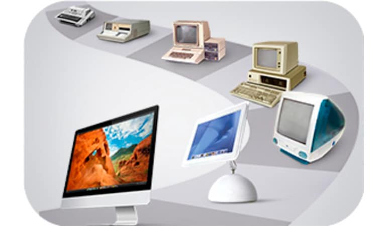
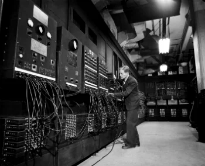

A evolução dos computadores teve seu inicio no século XVII, e é composta por 5 gerações.

Primeira Geração(1946-1955).
Os computadores de primeira geração funcionavam por meio de circuitos e válvulas eletrônicas. Possuíam o uso restrito, além de serem imensos e consumirem muita energia, Um exemplo é o ENIAC (Eletronic Numerical Integrator and Computer) que consumia cerca de 200 quilowatts e possuía 19.000 válvulas.

Segunda Geração(1950-1965).
Ainda com dimensões muito grandes, os computadores da segunda geração funcionavam por meio de transistores, os quais substituíram as válvulas que eram maiores e mais lentas. Nesse período já começam a se espalhar o uso comercial.
Terceira Geração(1965-1975).
Os computadores da terceira geração funcionavam por meio de circuitos integrados, que aumentaram a velocidade e a eficiência. Foi também o início do uso dos chips, dos teclados e dos monitores, os computadores passaram a ter uma aparência mais próxima do que se conhece hoje.
Quarta Geração(1975-até dias atuais)
Com o desenvolvimento da tecnologia da informação, os computadores diminuem de tamanho, aumentam a velocidade e capacidade de processamento de dados. São incluídos os microprocessadores com gasto cada vez menor de energia.
Além disso, surgem os softwares integrados e a partir da virada do milênio, começam a surgir os computadores de mão.Foi marcada pela popularização dos computadores pessoais, com o surgimento dos microcomputadores, microprocessadores e microchips.
Quinta Geração(1981-até dias atuais)
O conceito das máquinas da quinta geração baseia-se em quatro elementos fundamentais: o módulo de resolução de problemas, o dispositivo de gestão das bases de conhecimentos, uma fase intermédia de linguagem natural e, finalmente, um módulo de programação. Nessa geração, é possível avaliar a evolução da tecnologia multimídia, da robótica e da internet,A Quinta Geração de Computadores tem como característica a simplificação e miniaturização do computador, além de melhor desempenho.
Além disso, surgem os softwares integrados e a partir da virada do milênio, começam a surgir os computadores de mão. Ou seja, os smartphones, iPod, iPad e tablets, que incluem conexão móvel com navegação na web.


.jpeg)
.jpeg)